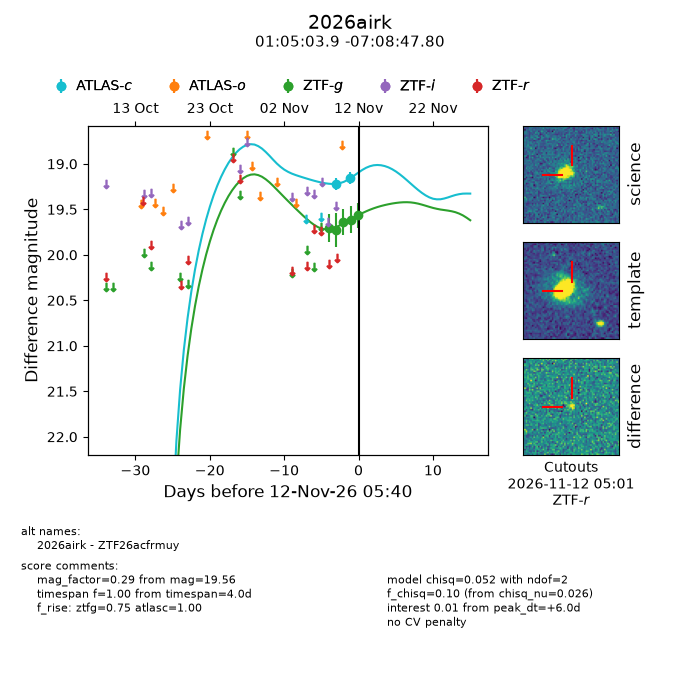
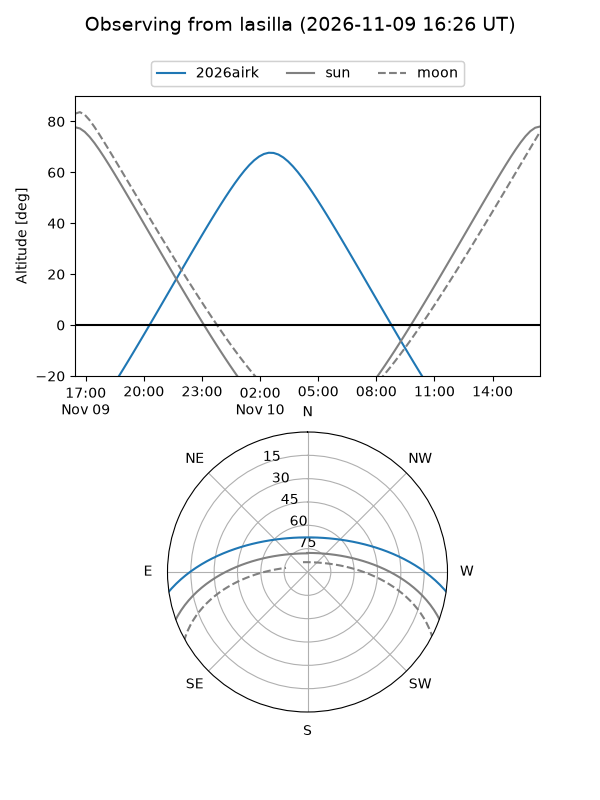
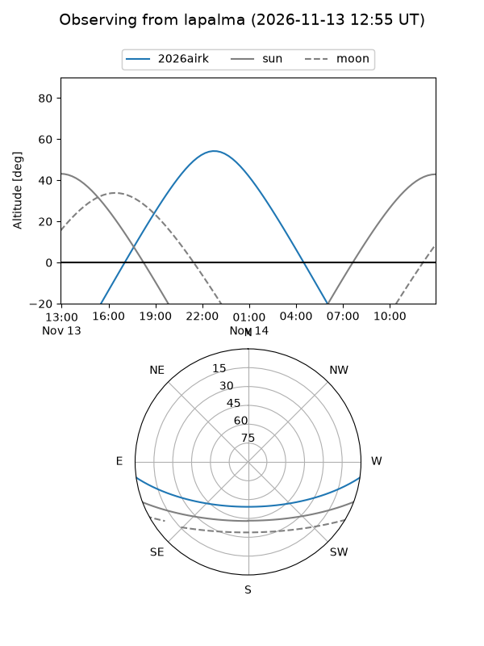
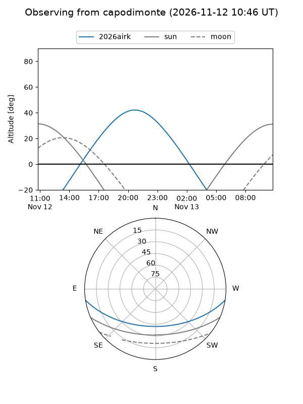
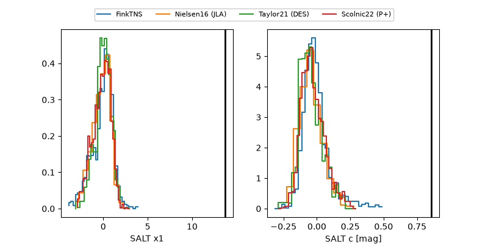

2026airk
Target 2026airk at 2026-11-12 05:42
Aliases and brokers:
FINK-ZTF: ztf.fink-portal.org/ZTF26acfrmuy
Lasair-ZTF: lasair-ztf.lsst.ac.uk/objects/ZTF26acfrmuy
ALeRCE-ZTF: alerce.online/object/ZTF26acfrmuy
YSE-PZ: ziggy.ucolick.org/yse/transient_detail/2026airk
TNS name: wis-tns.org/object/2026airk
Direct TNS query: direct search
alt names
ZTF26acfrmuy (ztf,fink_ztf)
2026airk (tns,yse)
Coordinates:
equatorial (ra, dec) = 16.2664,-7.14661
equatorial (HMS+DMS) = 01:05:03.93,-07:08:47.80
galactic (l, b) = (132.7446,-69.75831)
Flags:
peak dt: +6.0
Photometry:
last atlasc=19.16, ztfg=19.56
2 atlasc, 5 ztfg detections
Lightcurve

Visibility



Additional plots
